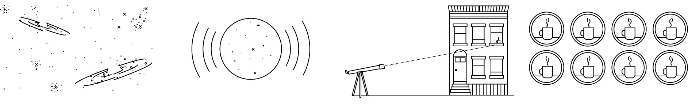
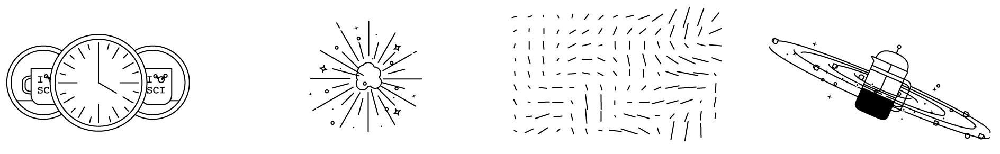

Alan Guth was one of the first physicists to hypothesize the existence
of inflation, which explains how the universe expanded so uniformly
and so quickly in the instant after the Big Bang 13.8 billion years
ago.
Rick Friedman for The New York Times
CAMBRIDGE, Mass. — One night late in 1979, an itinerant young
physicist named Alan Guth, with a new son and a year’s appointment
at Stanford, stayed up late with his notebook and equations,
venturing far beyond the world of known physics.
He was trying to understand why there was no trace of some exotic
particles that should have been created in the Big Bang. Instead he
discovered what might have made the universe bang to begin with. A
potential hitch in the presumed course of cosmic evolution could
have infused space itself with a special energy that exerted a
repulsive force, causing the universe to swell faster than the speed
of light for a prodigiously violent instant.
If true, the rapid engorgement would solve paradoxes like why the
heavens look uniform from pole to pole and not like a jagged, warped
mess. The enormous ballooning would iron out all the wrinkles and
irregularities. Those particles were not missing, but would be
diluted beyond detection, like spit in the ocean.
“SPECTACULAR REALIZATION,” Dr. Guth wrote across the top of the page
and drew a double box around it.
On Monday, Dr. Guth’s starship came in. Radio astronomers reported
that they had seen the beginning of the Big Bang, and that his
hypothesis, known undramatically as inflation, looked right.
Reaching back across 13.8 billion years to the first sliver of
cosmic time with telescopes at the South Pole, a team of astronomers
led by John M. Kovac of the Harvard-Smithsonian Center for
Astrophysics detected ripples in the fabric of space-time —
so-called gravitational waves — the signature of a universe being
wrenched violently apart when it was roughly a trillionth of a
trillionth of a trillionth of a second old. They are the long-sought
smoking-gun evidence of inflation, proof, Dr. Kovac and his
colleagues say, that Dr. Guth was correct.
Inflation has been the workhorse of cosmology for 35 years, though
many, including Dr. Guth, wondered whether it could ever be proved.
If corroborated, Dr. Kovac’s work will stand as a landmark in
science comparable to the recent discovery of dark energy pushing
the universe apart, or of the Big Bang itself. It would open vast
realms of time and space and energy to science and speculation.
Confirming inflation would mean that the universe we see, extending
14 billion light-years in space with its hundreds of billions of
galaxies, is only an infinitesimal patch in a larger cosmos whose
extent, architecture and fate are unknowable. Moreover, beyond our
own universe there might be an endless number of other universes
bubbling into frothy eternity, like a pot of pasta water boiling
over.
‘As Big as It Gets’
In our own universe, it would serve as a window into the forces
operating at energies forever beyond the reach of particle
accelerators on Earth and yield new insights into gravity itself.
Dr. Kovac’s ripples would be the first direct observation of
gravitational waves, which, according to Einstein’s theory of
general relativity, should ruffle space-time.
Marc Kamionkowski of Johns Hopkins University, an early-universe
expert who was not part of the team, said, “This is huge, as big
as it gets.”
He continued, “This is a signal from the very earliest universe,
sending a telegram encoded in gravitational waves.”
The ripples manifested themselves as faint spiral patterns in a
bath of microwave radiation that permeates space and preserves a
picture of the universe when it was 380,000 years old and as hot
as the surface of the sun.
Dr. Kovac and his collaborators, working in an experiment known as
Bicep, for Background Imaging of Cosmic Extragalactic
Polarization, reported their results in a scientific briefing at
the Center for Astrophysics here on Monday and in a set of papers
submitted to The Astrophysical Journal.
The Theory of Inflation
Astronomers have found evidence to support the theory of inflation,
which explains how the universe expanded so uniformly and so quickly
in the instant after the Big Bang 13.8 billion years ago.

THE UNIVERSE is just under 14 billion years old. From our
position in the Milky Way galaxy, we can observe a sphere that
is now about 92 billion light-years across. But there's a
mystery. Wherever we look, the universe has an even
temperature.
NOT ENOUGH TIME The universe is not old enough for light to
have traveled the vast distance from one side of the universe
to the other, and there has not been enough time for scattered
patches of hot and cold to mix into an even temperature.
DISTANT COFFEE At a smaller scale, imagine using a telescope
to look a mile in one direction. You see a coffee cup, and
from the amount of steam, you can estimate its temperature and
how much it has cooled.
COFFEE EVERYWHERE Now turn around and look a mile in the other
direction. You see a similar coffee cup, at exactly the same
temperature. Coincidence? Maybe. But if you see a similar cup
in every direction, you might want to look for another
explanation.

STILL NOT ENOUGH TIME There has not been enough time to carry
coffee cups from place to place before they get cold. But if
all the coffee cups were somehow filled from a single coffee
pot, all at the same time, that might explain their even
temperature.
INFLATION solves this problem. The theory proposes that, less
than a trillionth of a second after the Big Bang, the universe
expanded faster than the speed of light. Tiny ripples in the
violently expanding energy field eventually grew into the
large-scale structures of the universe.
FLUCTUATION Astronomers have now detected evidence of these
ancient fluctuations in swirls of polarized light in the
cosmic background radiation, which is energy left over from
the early universe. These are gravitational waves predicted by
Einstein.
EXPANSION Returning to our coffee, imagine a single, central
pot expanding faster than light and cooling to an even
temperature as it expands. That is something like inflation.
And the structure of the universe mirrors the froth and foam
of the original pot.
Dr. Kovac said the chance that the results were a fluke was only one
in 10 million.
Dr. Guth, now 67, pronounced himself “bowled over,” saying he had
not expected such a definite confirmation in his lifetime.
“With nature, you have to be lucky,” he said. “Apparently we have
been lucky.”
The results are the closely guarded distillation of three years’
worth of observations and analysis. Eschewing email for fear of a
leak, Dr. Kovac personally delivered drafts of his work to a select
few, meeting with Dr. Guth, who is now a professor at Massachusetts
Institute of Technology (as is his son, Larry, who was sleeping that
night in 1979), in his office last week.
“It was a very special moment, and one we took very seriously as
scientists,” said Dr. Kovac, who chose his words as carefully as he
tended his radio telescopes.
Andrei Linde of Stanford, a prolific theorist who first described
the most popular variant of inflation, known as chaotic inflation,
in 1983, was about to go on vacation in the Caribbean last week when
Chao-Lin Kuo, a Stanford colleague and a member of Dr. Kovac’s team,
knocked on his door with a bottle of Champagne to tell him the news.
Stanford Professor Andrei Linde celebrates physics
breakthroughCredit...CreditVideo by StanfordUniversity
Confused, Dr. Linde called out to his wife, asking if she had
ordered anything.
“And then I told him that in the beginning we thought that this was
a delivery but we did not think that we ordered anything, but I
simply forgot that actually I did order it, 30 years ago,” Dr. Linde
wrote in an email.
Calling from Bonaire, the Dutch Caribbean island, Dr. Linde said he
was still hyperventilating. “Having news like this is the best way
of spoiling a vacation,” he said.
By last weekend, as social media was buzzing with rumors that
inflation had been seen and news spread, astrophysicists responded
with a mixture of jubilation and caution.
Max Tegmark, a cosmologist at M.I.T., wrote in an email, “I think
that if this stays true, it will go down as one of the greatest
discoveries in the history of science.”
John E. Carlstrom of the University of Chicago, Dr. Kovac’s mentor
and head of a competing project called the South Pole Telescope,
pronounced himself deeply impressed. “I think the results are
beautiful and very convincing,” he said.
Paul J. Steinhardt of Princeton, author of a competitor to inflation
that posits the clash of a pair of universes as the cause of
genesis, said that if true, the Bicep result would eliminate his
model, but he expressed reservations about inflation.
Lawrence M. Krauss of Arizona State and others also emphasized the
need for confirmation, noting that the new results exceeded earlier
estimates based on temperature maps of the cosmic background by the
European Space Agency’s Planck satellite and other assumptions about
the universe.
“So we will need to wait and see before we jump up and down,” Dr.
Krauss said.
Corroboration might not be long in coming. The Planck spacecraft
will report its own findings this year. At least a dozen other teams
are trying similar measurements from balloons, mountaintops and
space.
Spirals in the Sky
Gravity waves are the latest and deepest secret yet pried out of
the cosmic microwaves, which were discovered accidentally by Arno
Penzias and Robert Wilson at Bell Labs 50 years ago. They won the
Nobel Prize.
Dr. Kovac has spent his career trying to read the secrets of these
waves. He is one of four leaders of Bicep, which has operated a
series of increasingly sensitive radio telescopes at the South
Pole, where the thin, dry air creates ideal observing conditions.
The others are Clement Pryke of the University of Minnesota, Jamie
Bock of the California Institute of Technology and Dr. Kuo of
Stanford.
“The South Pole is the closest you can get to space and still be
on the ground,” Dr. Kovac said. He has been there 23 times, he
said, wintering over in 1994. “I’ve been hooked ever since,” he
said.
The Bicep2 telescope, in the foreground, was used to detect the
faint spiraling gravity patterns — the signature of a universe
being wrenched violently apart at its birth.Credit...Steffen
Richter/Associated Press
In 2002, he was part of a team that discovered that the microwave
radiation was polarized, meaning the light waves had a slight
preference to vibrate in one direction rather than another.
This was a step toward the ultimate goal of detecting the
gravitational waves from inflation. Such waves, squeezing space in
one direction and stretching it in another as they go by, would
twist the direction of polarization of the microwaves, theorists
said. As a result, maps of the polarization in the sky should have
little arrows going in spirals.
Detecting those spirals required measuring infinitesimally small
differences in the temperature of the microwaves. The group’s
telescope, Bicep2, is basically a giant superconducting
thermometer.
“We had no expectations what we would see,” Dr. Kovac said.
The strength of the signal surprised the researchers, and they
spent a year burning up time on a Harvard supercomputer, making
sure they had things right and worrying that competitors might
beat them to the breakthrough.
A Special Time
The data traced the onset of inflation to a time that physicists
like Dr. Guth, staying up late in his Palo Alto house 35 years
ago, suspected was a special break point in the evolution of the
universe.
Physicists recognize four forces at work in the world today:
gravity, electromagnetism, and strong and weak nuclear forces. But
they have long suspected that those are simply different
manifestations of a single unified force that ruled the universe
in its earliest, hottest moments.
As the universe cooled, according to this theory, there was a fall
from grace, like some old folk mythology of gods or brothers
falling out with each other. The laws of physics evolved, with one
force after another splitting away.
That was where Dr. Guth came in.
Under some circumstances, a glass of water can stay liquid as the
temperature falls below 32 degrees, until it is disturbed, at
which point it will rapidly freeze, releasing latent heat.
Similarly, the universe could “supercool” and stay in a unified
state too long. In that case, space itself would become imbued
with a mysterious latent energy.
Inserted into Einstein’s equations, the latent energy would act as
a kind of antigravity, and the universe would blow itself up.
Since it was space itself supplying the repulsive force, the more
space was created, the harder it pushed apart.
What would become our observable universe mushroomed in size at
least a trillion trillionfold — from a submicroscopic speck of
primordial energy to the size of a grapefruit — in less than a
cosmic eye-blink.
Almost as quickly, this pulse would subside, relaxing into
ordinary particles and radiation. All of normal cosmic history was
still ahead, resulting in today’s observable universe, a patch of
sky and stars billions of light-years across. “It’s often said
that there is no such thing as a free lunch,” Dr. Guth likes to
say, “but the universe might be the ultimate free lunch.”
Make that free lunches. Most of the hundred or so models resulting
from Dr. Guth’s original vision suggest that inflation, once
started, is eternal. Even as our own universe settled down to a
comfortable homey expansion, the rest of the cosmos will continue
blowing up, spinning off other bubbles endlessly, a concept known
as the multiverse.
So the future of the cosmos is perhaps bright and fecund, but do
not bother asking about going any deeper into the past.
We might never know what happened before inflation, at the very
beginning, because inflation erases everything that came before
it. All the chaos and randomness of the primordial moment are
swept away, forever out of our view.
“If you trace your cosmic roots,” said Abraham Loeb, a
Harvard-Smithsonian astronomer who was not part of the team, “you
wind up at inflation.”
A version of this article appears in print on March 18, 2014,
Section A, Page 1 of the New York edition with the headline: Space
Ripples Reveal Big Bang’s Smoking Gun.
Order Reprints | Today’s Paper |
Subscribe